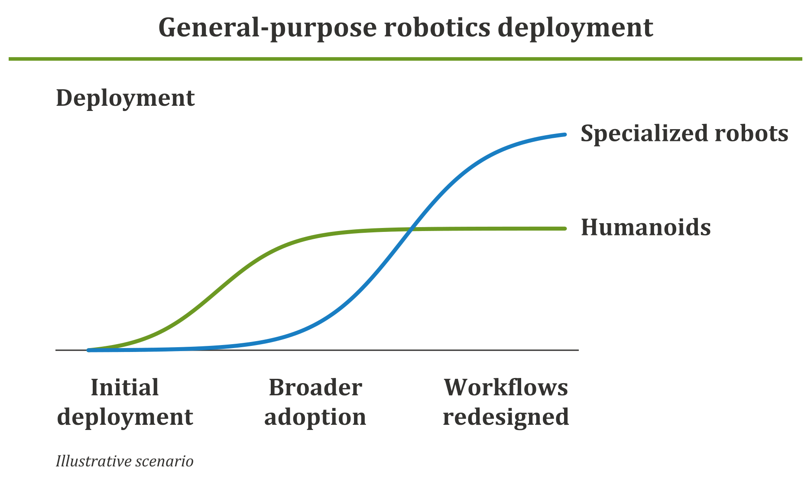

Run before you walk
Why we should solve the hardest problem first
“for increasing his leisure and enriching his spiritual life” Norbert Wiener - The Human Use of Human Beings
A machine can be better at walking than standing still. In 1998, Michael Coleman and Andy Ruina built a two-legged toy that walked downhill on gravity alone but was unstable in every standing position, showing that much of walking is a natural consequence of gravity and the mechanical geometry of the human body, nearly a decade before real whole-body control systems.
In his recent podcast Sergey Levine described that in machine learning it’s often best to solve the hardest problem first. He gives the example of NLP, and robotics is littered with such examples, be it X for X or X for X. The field is singularly pointed towards generalization, and the company with the most data-efficient learning architecture, coupled with the largest-scale data CORPUS?, will be the winner (plus the long tail of picks and shovels).
I think this is the most important problem in the world, and the effort being dedicated towards it still pales in comparison to the amount of investment and effort required to bring this about. This would mean a world where not only thinking itself is outsourced, but the physical labor itself.
Axioms of robotics development
Machines exist primarily to make humans better - “
Matter will be the limiting factor: Food, housing, energy, care still come from physical work. In Sam Tidswell’s Ultrarobots, ReGen’s abundance thesis rests on robots that shape energy and matter into useful goods within Earth’s resource limits. When thinking of the robotics deployment path, it's important to consider that they must exist within the human world before reshaping it (see: humanoids section).
Robotics systems as feedback interruptions: What the robot expected has to meet what its action changed. Ashby’s An Introduction to Cybernetics treats deviations as information for correction, while beliefs in Thrun, Burgard and Fox’s Probabilistic Robotics change with each action and observation. ‘Robotics is a systems problem’
Morphology should follow from function: The work should determine the body: Shape, materials, sensors and control determine behavior together, as Pfeifer and Bongard argue in How the Body Shapes the Way We Think; I’d copy human anatomy where it helps the task and simplify where it doesn’t.
The fundamental flywheel of robotics
DIAGRAM: sensing -> visuomotor policy -> action
Sensing: The goal with sensing has been to create the highest fidelity view of the world of the robot. There is an inherent tradeoff between the amount of data ingested and its usefulness to guiding next actions. RESEARCH PAPER REFERENCE. Historically, this process involved cameras, rangefinders, and sensors with the primary concern being actually maximizing state data within compute limits, but the modern issue is now representation (as it is with all things). Research today is abstracting sensing inputs to the world or scene level as the use of world action models as the backbone of VLAs becomes more popular. The necessary unlock here is X.
Visuomotor policy: Robotics policies have seen the most change since the Cybernetics era of the 1940s. These are the ‘brain’ of the robot and have necessarily grown in complexity as robot morphologies and action has become more dynamic. When robot’s tasks were bounded and workflow-specific, their brains could be top-down, reactive algorithms; as with the aforementioned changes to sensing and on-body compute, in addition to seminal papers from thinkers like X PROBABILITISTIC ROBOT AND SLAM MAN and later Sergey Levine’s DEEP VISUOMOTOR POLICIES PAPER, policies shifted to deep-learning based approaches that allowed for 2 major unlocks: imitation learning and reinforcement learning.
Today, visuomotor policies are typically VLA-based (Dyna, PI with a world model backbone, etc) where they do X and generate action trajectories using diffusion / flow matching. This can either look like symbolic planning / language-guided approaches as with RT-2 and OpenVLA and classical control / imitation learning based models such as at PI. Within the last ~year, these models have rapidly expanded their input sizes to take in larger amounts of context, moving from single frames to action chunks and now near-persistent memory.
DIAGRAM OF VISUOMOTOR POLICIES
The next frontier here is data, and it’s basically the only thing that matters. The near-unanimous conclusion across labs is that architectural improvements are necessary but marginal boosts to what is fundamentally a data issue. These models need X amount more data to be trained to achieve emergent capabilities, the current largest data set that is used to train such models is X many parameters while the early innings of LLMs these models had access to the entire internet for semantic understanding, and they were still pretty lackluster. Honing in on the parallel to LLMs, I’d say we are around 2018-2019 where early transformers architectures showed the ability to effectively be next-token generators but lacked the ability to generalize effectively.
DIAGRAM OF THE DATA PROBLEM
Action: COME BACK TO
Data scaling is finally working
Around 2022, it became clear that LLM performance depends on the data used in pretraining, alongside model size and compute. X THINKER CREDITS MUCH OF THE IMPROVEMENTS IN LLMS TO DATA ACCESS. It seems obvious now, but the most reliable (not most efficient) way to improve LLM model performance is to increase the pre-training data set.
Such a discovery was harder to establish in robotics, as large pretrained models are a relatively new approach to visuomotor policies and robot demonstrations have to be physically collected as opposed to being able to mass-scrape internet data for LLM training. This matters because this is a step closer to generalization, as neural networks can now predict action chunks of joint targets from observations and instructions, rather than us specifying each movement.
The clearest example of this is Dyna’s 2026 study of Dyna-2 where the team found that increasing human-video pretraining from 1,000 to one million hours raised mean normalized performance across fourteen tasks from 20% to 53%. It’s hard to overstate how important proving this out is, as this means that now an extra dollar invested in a robotics company has a definitive ROI in robot performance.
This has a couple important implications
This is the same problem as LLMs, but harder: The basic process of LLM pre-training still applies to robotics VLAs, as these models produce an array of output trajectories based on state and text inputs and use backpropagation and gradient descent to train parameters OR WEIGHTS. In PI 0.6, the process looks like: XYZ PROCESS
DIAGRAM OF PI PROCESS
For pre training, the naive approach is to generalize flow matching policies without considering physical or even a semantic understanding of the robot state. Historic approaches like X OR OPENVLA did this but SOTA modes need to develop an understanding of objects, their relationships, and how to interact with them.
EXAMPLE OF CUP BALL CAR
This is what makes the data problem so immense, as these models need to understand the force to apply for given actions, how surfaces react against each other, how different embodiments affect actions, etc. compare this to an LLM where input data is accessible on the internet and semantic understanding IS the thing. Robots have an infinite dimensional potebtial data input and output surface, while LLMs are essentially 2D.
PIC OF DYNA DOING STUFF
there are some solutions such as UMI (shoutout Pantheon) and making learning more efficien, much of which will be made easier through deployment data, but for true generalization as we see with LLMs, we will still likely need one of the largest data collection projects in human history.
We’re incredibly far (QUOTE):
It’s also important to note how hilariously small this data scale still is.
There have been some landmark efforts to collate large-scale data corpuses for robotics pre-training such as OpenX which was used to train OpenVLA and PI 0.5. Within the last ~year the leading labs are doubling down on proprietary data collections but if we keep up the parallel to LLMs, these data collections should be second to a centralized data effort (and it seems like the word agrees, as with the swath of new robotics data companies in recent months).
Given the scale of the problem, it’s important to consider what this implies for truly general robotics foundation models. We likely aren’t gonna see the ChatGPT moment for robotics in the near future (no matter how much tweets would like you to believe this) with this approach. Other approaches like physics-based models might inflect, but the data collection effort to train a general purpose VLA needs infrastructure.
This makes robots investable: If robotics model pre training sees power law returns to performance as seen with LLMs, this makes them potentially one of the most compelling business models to invest behind. Inference is an astoundingly great business, after the initial cost of a model training you have FINISH THIS SENTENCE. This is being threatened by rapidly increasing demand elasticity for token prices but robots will be more insulated from this given the cost of offering robotics execution. As a result and given the fact that robotics output will be far more productive than a unit of LLM output, the ‘end-state’ of a robotics business could mimic the incredible unit economics of inference.
CASE STUDY OF A REAL ROBOTICS COMPANY
Power law dynamics would mean the following: at some point
GRAPH OF LLM PERFORMANCE OVER TIME AND THEN WHERE ROBOTICS MODELS ARE
TWEET ABOUT INFERENCE BUSINESS MODEL
Failure as an asset
This is why failure data may be one of the most important inputs at this stage, as the robot’s mistakes expose states that clean human demonstrations don’t cover. In his Dwarkesh interview, Sergey Levine describes robots that can “make mistakes and recover from those mistakes” and discusses PI’s goal to “extract good training signals from bad experiential data”.
I think this can go one of two ways: expand training data task coverage in training data or improving neural network
The goal here will be to make training more efficient and centralized. I see this happening a couple ways:
Learning from human video: Human footage is easier to collect than robot demonstrations, but often lacks usable action labels, so an action-only objective can’t learn from all of it. In DYNA, the next frames supply another target: predict how the scene changes, with those learned features shared by the action policy. Holding action-labelled data fixed while adding video-only training improved prediction on unseen robot data, so this is a specific reason why more human footage can help a robot with different joints and controls.
Specific architectural unlocks: I’d look at two directions here focused on representation theory, one is stronger instruction conditioning through FiLM, where the command scales and shifts visual features so the robot processes the scene according to what we ask; in the 2025 OpenVLA-OFT study by Moo Jin Kim, Chelsea Finn, and Percy Liang, removing FiLM dropped correct target selection to 33% on both food-selection tasks (chance among three options). The broader parallel to RoPE is explicit structure in the computation: relative position in LLM attention, task context in the robot’s visual processing.
Alongside architecture, I’d look at action representations such as FAST, which uses a discrete cosine transform and byte-pair encoding to compress movement sequences, much as language tokenizers compress text. That reduces the shortcut of predicting nearly identical successive action tokens, so my bet is that better conditioning and representations will let the next batch of data teach more than simply scaling the same model.
Better coverage per collection hour: For a robot to work in a new room with a new object, repeating a demonstration in the old room eventually buys less than changing the setup. Across more than 40,000 demonstrations and 15,000 real robot trials, Fanqi Lin and colleagues’ Data Scaling Laws in Imitation Learning for Robotic Manipulation found roughly power-law gains with object and environment diversity, while further demonstrations within one setup had diminishing returns. The collection strategy becomes part of the learning method.
I liken this to the LLMs (again), as if we look at what has led to the step-change increases in model performance, it’s been more data paired with changes in how the model uses it. In robotics, that means architectural changes such as FiLM, alongside training objectives such as DYNA’s future-video prediction, so scaling the data and improving the model go together.
In LLMs, early progress was driven by more pretraining data alongside model size and compute, while architectural changes such as fine-grained expert routing, shared experts, and multi-head latent attention improved efficiency. With the first two, DeepSeekMoE 16B reached comparable overall performance to DeepSeek 7B on the same two-trillion-token corpus at about 40% of the compute, with small routed experts for specialized work and shared experts for common patterns. The later DeepSeek-V2 work added latent attention, which compresses the key/value cache to reduce inference memory. In robotics, we’re still a ways away from the initial productivity gain of data scaling, and thus it’s important to not overstate the importance of architectural changes to these models especially as there has yet to be enough investment in one model to warrant tuning of a specific architecture.
When LLM scaling laws became clearer in Kaplan and colleagues’ 2020 paper, Scaling Laws for Neural Language Models, this was, to me, a signal that these could be viable businesses: spending on compute and data could buy more predictable gains in capability, which made the business case easier to underwrite. Looking back at the gold rush in training data (Scale) then RL environments (Mercor), it’s easy to see the parallel for robotics 5 years down the pipe.
The important questions here are manyfold:
Is the best path to OOD performance wider data coverage or does this NEED an architecture change?
What data mix is necessary (teleop, egocentric, etc.)?
How do the data consumption needs of the software layer change across different visuomotor policy regimes (VLAs, world-action models, etc.)?
What is the acquisition and consumption path of different data types?
What humans got right
Human imitation in design has been a consistent goal of robotics design. It’s been a catalyst of interesting progress beyond the practical step-changes in hardware development (actuators, particularly brushless DC motors, their drives, batteries, and compute).
For hands, much of this has focused on tendon-driven actuation, as motors can sit in the forearm and transmit force to the fingers without adding all of their weight to the moving joints. This is the approach in Mimic’s M1, where a wider wrist accommodates tendon routing over bearings and pulleys to reduce sliding friction through the transmission. More literal attempts to reproduce muscle, such as HASEL’s electrically driven, fluid-filled pouches, have also produced interesting research, although the 2024 hopping-leg demonstration still relied on a support boom and external high-voltage power.
In the near term, there’s still a lot of room to improve the electric actuators we already have. Much of the progress in force control has come from matching high-torque motors to lower gear reductions, as in MIT’s Cheetah research, where the legs could respond quickly to contact without the large reflected inertia of a heavily geared transmission. This shifts the requirements into the motor’s torque and thermal performance, while better models may also let us revisit more complicated mechanisms that were previously too difficult to control.
Thinking about deployment, I want to borrow a description from Deena Shakir and Ghazwa Khalatbari’s argument for morphology-agnostic robotics. The world is designed for humans and this gives humanoids a practical advantage, as they can reach shelves, work at counters, and use existing tools without redesigning the environment. I think the deployment of general-purpose models will look like a diffusion curve, where humanoids initially benefit from that compatibility while the longer tail of specialized machines expands as the intelligence transfers across embodiments. Further out, the building blocks of the economy can be redesigned around embodied intelligence, from adding autonomy to an existing excavator to designing machinery that was never meant for a human operator.

I’d expect much of near-term deployment to remain task-specific, where low-dexterity tasks can still have high economic value because the robot repeats the same paid operation for hours. DHL reports that Boston Dynamics’ Stretch can unload up to 700 cases per hour with a suction gripper, as the manipulation problem is constrained around boxes rather than the much wider range of objects and contacts a human hand handles. The commercial value here depends on unloading performance, supervision, and downtime, so investing in more finger dexterity would have to improve those numbers to be worth the added complexity.
Generalization
Historically, learned robotics policies were often trained or fine-tuned for individual tasks, while the goal with general-purpose models is to perform unfamiliar tasks from an instruction or a small number of demonstrations. The clearest recent example is Generalist’s GEN-1.5, where the company reports 59% average success across ten short tasks from a single 3–12-second sensorimotor demonstration (without changing the model weights), rising to 83% with five minutes of demonstration data per task and ten gradient steps.
We’re still talking about one-shotting short-horizon tasks here, while household autonomy also requires memory of what the robot has already done and recovery from mistakes over a longer sequence, even if each individual movement is familiar.
The data requirements also change across embodiments, as joint limits, reach, and control interfaces vary between robots even when the task is the same. In PI’s π0.7, laundry-folding data from smaller bimanual robots transferred to UR5e arms that had only appeared in training on other tasks, so the model didn’t require laundry demonstrations on that particular platform. This matters because the cost of data collection can change substantially if we don’t need to recollect every task for every robot, which would make shared pretraining much more valuable as the range of embodiments grows.
For a shared pretrained model, the available data sources contain different parts of the state-action relationship: human video supplies broad experience of objects and interactions, UMI preserves more precise movement trajectories through a handheld gripper, and teleoperation supplies actions on the same embodiment that will execute the policy. I think the collection strategy will have to combine these, alongside simulation and deployment data, as none of them captures all the forces, contact states, and failure cases we need. It’s also important to distinguish deployment volume from data diversity: a robot can repeat the same paid task thousands of times without encountering the range of conditions in a deliberately varied collection campaign, so more deployments don’t automatically solve generalization.
Scaling
Very few roboticds companies are truly scale-pilled
Hardware gaps
When thinking about how better model performance translates to deployment, it’s important to consider that scaling a fleet still requires motors, transmissions, sensors, and batteries (for untethered systems), even if the model is shared. The supply risk is already visible in other industries that use these components: in May 2025, Ford brought forward a week of downtime at its Chicago Explorer plant amid rare-earth supply constraints. For compact permanent-magnet motors, neodymium and praseodymium are particularly important, but the constraint is as much about processing as mining, with China accounting for 91% of refined magnet rare earths and 94% of sintered permanent magnets in 2024 according to the IEA.
There is investment in domestic capacity, including MP Materials’ refining and magnet production, but this still has to become a reliable supply of qualified components and this is FAR too small compared to the scale of the problem
. The same applies further down the actuator stack, where reducers, bearings, and screws have to meet tolerances and survive repeated loading; a cheap arm that works for data collection may not be reliable enough for deployment.
LLMs got lucky with GPUs, but robots have to carry their inference hardware or maintain a connection to it, so on- versus off-body intelligence is also a question of power, cooling, and latency. I think both approaches will matter: larger models can run remotely for decisions that tolerate latency, while rapid feedback remains local and systems such as Gemini Robotics On-Device put more of the learned policy onboard. The balance depends on the application, as connectivity may be reliable in a managed facility while a robot in remote inspection has to continue operating without it.
Economic vs human value
The economic value is enterprise but the human value is consumer. I keep coming back to this distinction because a company can justify a robot through the cost of a shift, the number of boxes moved, or the hours a production line can operate, while much of the work we do for ourselves and for one another has no such transaction attached to it (someone still has to cook, clean, carry things, and help a parent through the day, whether or not anyone is paid). In the home, the value of those same movements can extend into where a person is able to live and how much of their day they can decide for themselves, which is why I think consumer robotics will have a human significance that the initial market size may not capture.
I could see narrow consumer pilots spreading sooner than some enterprise applications, as a household might accept a useful machine that still requires occasional guidance while a factory has to qualify it against an entire production process. The owner can help with an unfamiliar object and decide that the remaining assistance is worth it, while a missed transfer in a production line may interrupt everything behind it; both settings still present the generalization problems we’ve discussed, but the amount and cost of human help can change which applications are worth deploying first.
At scale, though, my bet is still overwhelmingly enterprise, where a reliable system can repeat the same paid operation for many hours and the investment can be justified against its output, supervision, and maintenance. As more of that labor becomes autonomous, materials, energy, facilities, and the supply chains behind them become a larger part of the economics, which is why I think the investment opportunity extends so far beyond whoever trains the best policy. The human value also extends well beyond the robots people buy for themselves: a cheaper way to build housing could matter far more to a family than a robot they can afford to put inside it, and the same is true of the machines that produce their food or maintain their electricity. We’ll experience much of this abundance through things that become affordable or available, without ever seeing the machines that produced them.
Given the scale of that possibility, I think it’s important to come back to what Wiener wanted from automation in The Human Use of Human Beings: more leisure and a richer spiritual life, which he treated as a social obligation for management, rather than something that would automatically follow from the invention. If we can produce the same things with fewer hours of human labor, we can choose to produce more, work less, or some combination of the two, but the person whose labor has been displaced doesn’t necessarily get to make that choice, especially if their access to the output still depends on the wage the machine has helped remove. Lower production costs and a broader ability to afford the resulting goods are related through ownership, prices, and income, and it’s possible for a technology to succeed at the first without immediately delivering the second. This matters to the investment thesis too, as the value of cheap production depends on who can actually use and pay for what is produced.
For the people who do get that time back, I don’t think every saved hour has to become another productive hour, which is easy to lose sight of when the investment case is built around output per hour and the number of people needed to sustain it.
There’s a further challenge in Illich’s Tools for Conviviality, where he argues that more industrial output doesn’t necessarily give people more control over their lives: “People can be equally enslaved by their tools.” His objection to industrial dependence complicates the abundance thesis, because having a machine perform a task and having the freedom to decide how that task is performed aren’t always the same thing. We might want a robot to prepare dinner because we’re exhausted, or to handle the parts of cooking that our hands can no longer manage, while still wanting to choose the food, change the recipe, or cook for someone ourselves; I think the point of human agency here is that we can choose which work to give away and which work to keep, even when a machine could do it faster. That also means the ability to refuse the machine, change the arrangement, and pursue a purpose that wasn’t anticipated by whoever designed it, rather than only select between the options they made available.
Once these machines can produce more than we can, there’s a question of whether we use that capacity to reduce the demands on people or simply raise the expectations around them. For example a faster packing station could shorten a shift, but it could also increase the hourly target for the person beside it. I find Deleuze’s Postscript on the Societies of Control useful here because his account of control through continuously changing conditions, beyond the boundaries of a factory or school, helps explain why we could do less physical work without being any less subject to measurement or demands on our time.
If the aim is the abundance described in ReGen’s Ultrarobots thesis, where robots shape energy and matter into the things humans need within the Earth’s resource limits, then we have an enormous amount to build, repair, grow, and provide, from affordable housing to help with daily life that doesn’t depend on a family member leaving paid work. I think the effort dedicated to robotics still pales in comparison to what this could mean, especially for people whose physical needs aren’t well served today. I’d judge the result by whether more people can decide how and where to live, how much of their time to give to paid work, and how much to give to one another, with the machines taking over enough of the necessary labor that those decisions become practical choices rather than things we would do if we had the time or money.